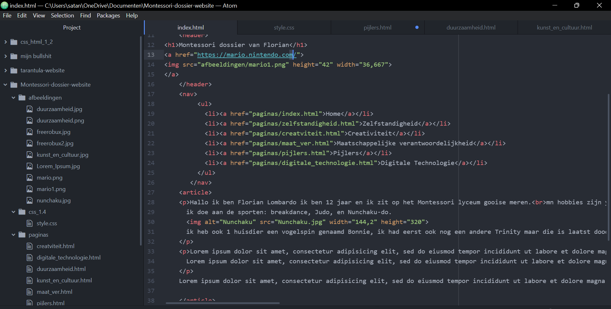

An umbrella term for computer-based products and solutions. Considering that nearly everything designed and developed these days uses computers, it is a rather vague term. Digital technology may refer to using new algorithms or applications to solve a problem even if computers were used to develop solutions in the past. See computer revolution.
